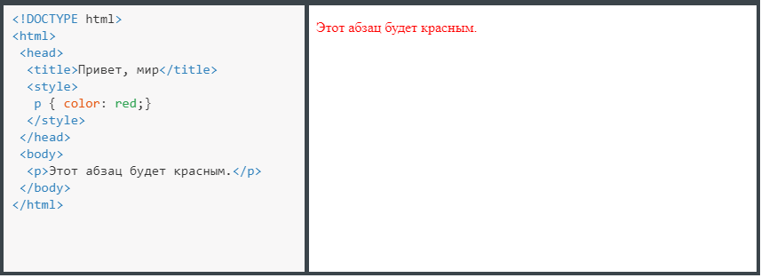

Подключение и сброс стилей
Для добавления стилей на веб-страницу существует несколько способов, которые различаются своими возможностями и назначением.
Встроенный стиль
Встроенный стиль является по существу расширением для одиночного элемента, используемого на текущей веб-странице. Вы можете писать CSS непосредственно в элементах HTML с помощью атрибута style, а значением атрибута выступает набор стилевых правил
В данном примере стиль элемента <p> меняется с помощью атрибута style, в котором через точку с запятой перечисляются стилевые свойства:
Это важный текст
Встроенные стили не рекомендуется применять на сайте, поскольку это усложняет редактирование стилей и нарушает принцип разделения кода и оформления.
Внутренняя таблица стилей
Вы можете использовать тег <style> внутри <head> вашего HTML-документа:

Этот способ добавления стиля часто применяется в ситуациях, когда речь идёт об одной веб-странице.
В данном примере задан стиль элемента <p>, который затем можно повсеместно использовать на данной веб-странице
Внешняя таблица стилей
Вы можете писать свой CSS в отдельном файле с расширением .css, а затем связать его с HTML с помощью тега <link>. Он располагается внутри <head>
Значение атрибута rel у <link> всегда будет stylesheet и остаётся неизменным. В качестве значения href указывается путь к CSS-файлу; путь может быть задан как относительно, так и абсолютно. Заметьте, что таким образом можно подключать таблицу стилей, которая находится на другом сайте.
Данный HTML-документ, который «вызывает» файл CSS, в нашем случае файл с именем style.css, расположен в той же папке, что и CSS-файл.
Этот метод, использующий отдельный CSS-файл, является предпочтительным.
Почему бы не размещать стиль прямо в HTML?
Потому что мы хотим отделить содержимое (HTML) от его представления (CSS).
- Это делает обслуживание проще: тот же CSS-файл может быть использован на всём сайте.
- А также обеспечивает гибкость: сосредоточьтесь на содержании с одной стороны и стилизации с другой.
В то же время, все описанные методы добавления CSS могут быть задействованы как самостоятельно, так и в сочетании друг с другом. В этом случае необходимо помнить об их иерархии при отображении. Первым имеет приоритет встроенный стиль, затем внутренняя таблица стилей и в последнюю очередь внешняя таблица стилей.
Сброс CSS
Нет такого понятия, как элемент HTML без стилей. Каждый браузер имеет свой собственный стиль по умолчанию для различных элементов. Такой стиль называется стиль клиентского приложения.
Стиль клиентского приложения
Этот файл CSS включён в браузер и вызывается:
- каждый раз, когда веб-страница визуализируется;
- до того, как применяется любой из наших CSS.
То, как Google Chrome отображает заголовки, абзацы, списки и так далее, может отличаться от того, как это делает Internet Explorer. Хотя каждый браузер содержит свой собственный клиентский CSS, все они довольно похожи.
Применение сброса CSS
Стили браузера по умолчанию могут мешать стилям, которые мы на самом деле хотим применить. Поэтому был разработан сброс CSS, чтобы обеспечить совместимость для всех браузеров.
Это особенно полезно для нормализации размера текста и удаления всех полей.
Сброс CSS берёт все основные элементы HTML с заданным стилем и обеспечивает единый стиль для всех браузеров. Эти сбросы обычно включают в себя удаление размеров, отступов, полей или дополнительные стили понижающие эти значения. Поскольку каскадирование CSS работает сверху вниз (скоро об этом узнаете) — наш сброс должен быть в самом верху нашего стиля. Это гарантирует, что эти стили прочитаются первыми и все разные браузеры станут работать с общей точки отсчёта.
Есть много разных сбросов CSS доступных для применения, у всех них есть свои сильные стороны. Один из самых популярных HTML 5 reset.css от Эрика Мейера. Его сброс CSS адаптирован для включения новых элементов HTML5. Просто скачайте или скопируйте и включите его в <head> до вашей собственной таблицы стилей.